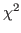
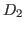
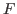
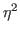

Next: mice: Multivariate imputation by Up: Rの利用に関する備忘録 Previous: psych
不完全な多変量データを補完するための mice パッケージへの補完的な関数を含む4。
 統計量の統合にもとづく  統計量を用いて分散分析の  値を統合する関数 5
以下の引数を指定する。
今、mice() によって多重代入された結果が data05mi に格納されているとする。 これを用いて、ee を従属変数、sex と school を要因とした分散分析を行い、タイプIIIの平方和にもとづく結果を統合するには、以下のようにする。
> library("miceadds")
> mi.anova(mi.res=data05mi,formula="ee~sex*school", type=3)
Univariate ANOVA for Multiply Imputed Data Type 3)
lm Formula: ee~sex*school
R^2=0.052704
..........................................................................
ANOVA Table
SSQ df1 df2 F value Pr(>F) eta2 partial.eta2
sex 20.93089 1 399.4617 20.6394 0.00001 0.00931 0.00974
school 90.87520 2 2792.2570 48.5409 0.00000 0.04044 0.04094
sex:school 6.64428 2 3705.6280 3.5264 0.02951 0.00296 0.00311
Residual 2129.00412 NA NA NA NA NA NA
分散分析表には、効果量（ および 偏 ）が報告される。
Taichi Okumura